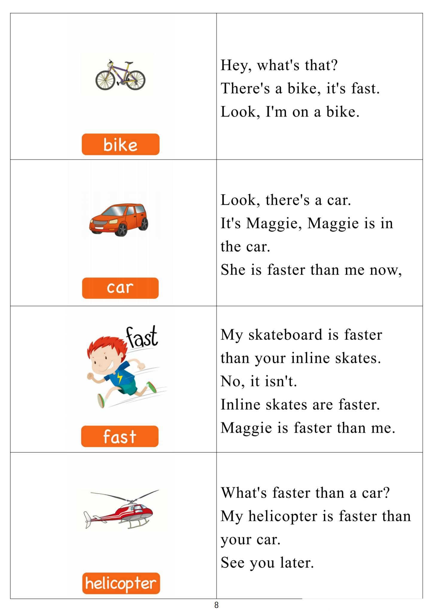

Day 7
Unit 3 · story
教材重点
网盘未提供逐日打卡原图；本级教材文件为“5.第五级单词卡.pdf”，以下重点结合单词卡与台词本整理，原文请看 Part 3。
Unit 3 · story · 7–8岁
can · look · say · play
Hello, hello, my name's Steve.
台词本为机器转写，可能存在识别误差；不等同于视频逐字原声。
详细内容
Part 1 核心词汇
必须掌握 · 4 个查看橙色每日打卡 Day 7 原图

Part 2 跟读句型与句型拓展
左侧保留台词本原句，右侧为替换练习；拓展内容不是视频逐字台词。
Hello, hello, my name's Steve.
So it's time to play. It's time to play in English.
Carriage.
Loft, basement and shed. Yeah, finished.
Ready to send to my party.
Part 3 台词本全文
来源：第5级台词本 · 007.Wow!Orange - Unit 3 story_3_1b.pdf。以下保留网盘 PDF 的机器转写文本，仅清理了文件路径页眉和空行。
Hello, hello, my name's Steve.
So it's time to play. It's time to play in English.
Garden.
Carriage.
Loft, basement and shed. Yeah, finished.
Ready to send to my party.
Come on, come on, let's play. Let's play, okay coming, steve, great, let's play hide and seek.
This is the base, hard, counter, twenty and you go, and, hi, okay, one.
To.
Three, oh, hey, hello, me and Maggie are playing hide and seek here in the garden.
Hey, look, there are lots of flowers and there is a tree in my garden, so what is it? Yeah?
It's a garden, say with me loudly, what is it.
It's our garden. What is it.
It's a garden. What is it It's a garden? Yeah, hurry up, steve, let's.
Sorry, maggie, okay?
One, two, miss a few nineteen, twenty coming ready or not. Ok's Maggie.
Is she in the shed in the garage?
Oh, hey, look, the window in the basement is open, maybe be, maggie is hiding in the basement. Let's
l
ook.
Maggie, maggie, hey, can you see Maggie.
Where is that naughty bird Don't go out.
There are spiders in India, oh, and it's cold.
Hey, you know what this is, don't you? Yeah, it's a basement.
Look, there's a small window, so hey, say it with me, what is it.
It's a basement saying again, what is it It's a basement, let me hear you, what is it.
It's our basement here, well done.
I'm in the basement, the basement, help, no, maggie's not here who she likes to be up high.
Lets look in the loft.
Maybe.
Maggie, I'm going to find you in the loft. Hey, can you see Maggie here in the laugh, oh,
Be quiet, stays here. Yes. You can see Maggie, oh, here.
/
-
/5/007.Wow!Orange - Unit 3 story_3_1b.txt[2022/3/29
星期二
6:51:48]
But what room is this? Look, there's an old sofa.
There are three old tables, so what room is this here It is, our laughed, hey, say it with me as I look for
Maggie.
It's ah, loft. What is it It's Ah loft. What is it.
It's a loft hope, but where's Maggie go? Oh, silly, steve,
Fucking money.
I win, okay, my turn to hide. Now can your turn to see, let's go back to the garden.
That was a good hiding place in the law. Now it's my turn to hide.
You counter twenty? Maggie, let's go.
Why I can hide in the shed.
You don't know what a shed is.
This is a shed, look, there are tools for the garden here, hey, say it with me, but quietly.
What is it It's a shed. What is it.
It's a shed, and again, what is it It's a.
Dead, well, done, so I'm going to hide in the shed.
No, so steam is in the show. No, I can't wait in the shed. Now where can I.
Eleven are her, the Gary.
Who.
Hey, I can hide in here. What is it? Yeah, it's a garage, say it with me, but quietly.
What is it.
It's a garage. What is it.
It's a garage. What is it It's a garage? Yeah, I can hide in the garage.
Oh, no, look, there's a car in the garage hole where can I hide.
Me.
Oh, hey, I can hide in that box, yeah, oh, maggie will never find me now.
Nineteen.
Twenty come in, ready or not, let's look in the shit, yeah?
Oh no, oh, maggie will never find me now. Oh, hell, maggie.
Yeah, bye bye.